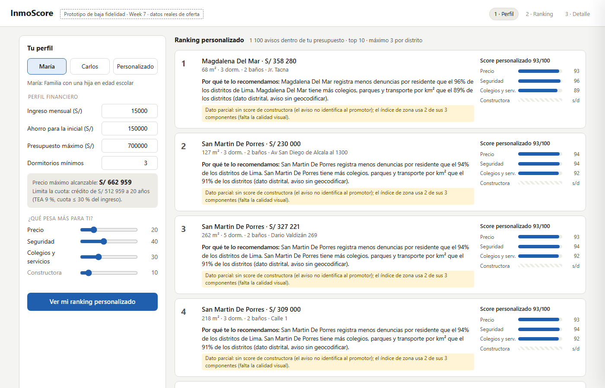
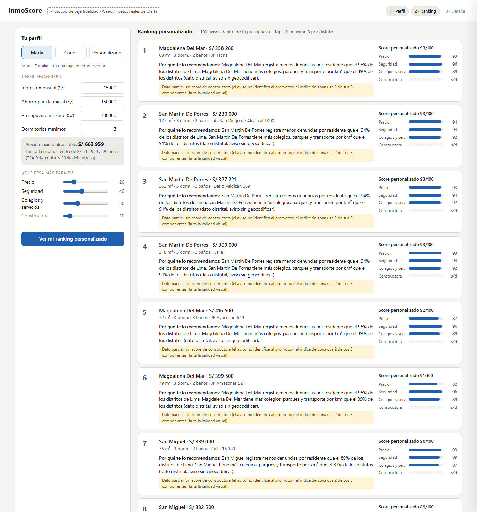
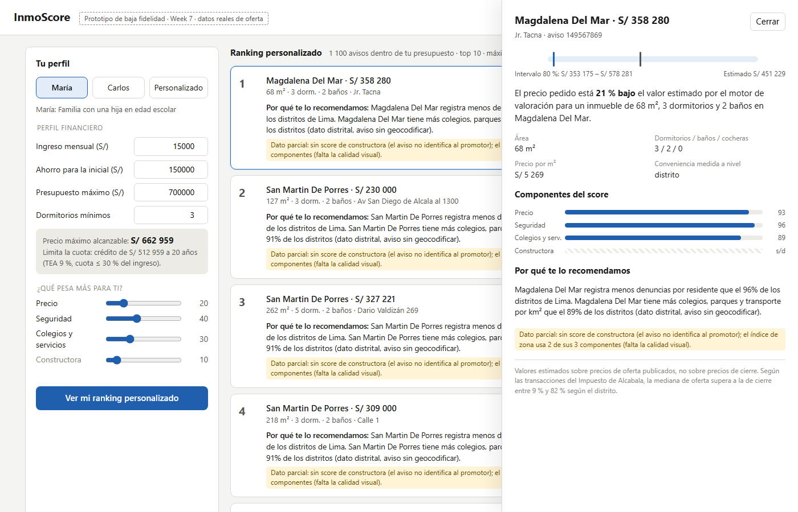

InmoScore · flujo principal del usuario en tres pasos
Capturas del prototipo de baja fidelidad (prototype/index.html) con datos reales. RNF-04 pide llegar al ranking en menos de tres pasos; aquí basta con elegir o ajustar el perfil.
PASO 1
Declarar el perfil

Ingreso, ahorro para la inicial, presupuesto y dormitorios; pesos de precio, seguridad, colegios y constructora.
Calcula el precio máximo alcanzable y dice qué lo limita: presupuesto, inicial o cuota.
RF-19RF-20REQ-08RNF-08
PASO 2
Recibir el ranking explicado

Top 10 dentro del presupuesto, con máximo 3 avisos por distrito; se recalcula al mover un peso.
Cada tarjeta trae su explicación y las barras de cada componente del score.
RF-21RF-22REQ-01REQ-02RNF-01
PASO 3
Revisar el detalle

Precio pedido frente al valor estimado y su intervalo del 80 %, componentes y explicación completa.
Aclara que la estimación se basa en precios de oferta, no de cierre.
RF-13RF-14RF-23RNF-05
Flujo alternativo · dato parcialSi falta un componente con peso (constructora, calidad visual), el aviso no se omite ni se imputa: la tarjeta lo declara en un recuadro amarillo (RF-23, RNF-06).
Flujo alternativo · precio atípicoSi el precio queda bajo el intervalo del 80 %, el aviso sale del ranking y aparece en “Por verificar”: puede ser una ganga o un error de área.
Pendiente para Week 10–12Mapa interactivo (RF-24), guardar, descartar y comparar (RF-25) y ajuste de pesos con el feedback implícito (RF-26).